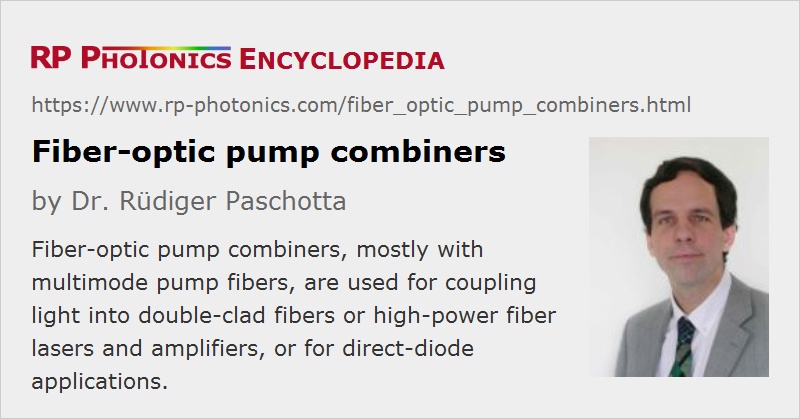

Fiber-optic Pump Combiners
Definition: fiber-optic couplers for sending pump and signal light into an amplifier or laser fiber
Alternative term: pump couplers
German: faseroptische Pumplicht-Koppler
Category: fiber optics and waveguides
How to cite the article; suggest additional literature
Author: Dr. Rüdiger Paschotta
High-power fiber amplifiers and lasers are based on rare-earth doped double-clad fibers. In principle, one can inject pump and signal light into such a fiber simply by appropriately focusing the light, coming from here, onto a bare fiber end. This is in fact often done for amplifier and laser devices in the research stage. Industrial lasers, however, should be based on an all-fiber setup, where fiber-coupled pump laser diodes are directly connected to the active fiber via some passive transport fibers, avoiding any air spaces in the beam path. Besides those simple transport fibers (which are usually multimode fibers), one then requires fiber-optic pump combiners (or pump couplers), i.e., special types of fiber couplers used for interfacing to the active fiber. That approach allows for substantially better robustness and stability of the devices.
In the following, we consider not only pure pump combiners, but also signal–pump combiners, having an additional signal input.
Typically, such a device has the following interfaces:
- On one side, there is a fiber which can directly be connected (usually by fusion splicing) to a certain type of active fiber. (Between those two fibers, there is sometimes an additional passive fiber, e.g. in order to include a fiber Bragg grating if that cannot be written into the active fiber.)
- On the other side, the combiner has several input multimode fibers which can be connected to fiber-coupled pump laser diodes (normally based either on broad-area laser diodes or diode bars). In addition, there is often (but not always) another fiber (a single-mode fiber or a few-mode fiber) through which one may inject or extract signal light. (In case of a fiber laser, no signal light needs to be injected, but laser light needs to be extracted from one end.)
Such a device may be placed in a metallic housing, which is typically a couple of centimeters long. It may have to be put in thermal contact with a base plate in order to avoid excessive heating due to dissipated power.
A pump–signal combiner with six pump inputs and one signal input may be denoted as a (6 + 1) × 1 combiner (or (6 + 1) : 1 combiner). There are also variants like (N + 1) × 1 with other values of N. Pump combiners without a signal input are denoted as N × 1 (or N : 1), where N may e.g. be 3, 7 or 19 – often an odd value, since an even number of fibers is arranged one central fiber.
It should in principle not be a problem not to use all pump input ports, except that of course one will lose pump brightness.
Besides industrial high-power lasers, pump–signal combiners are also used for erbium-doped fiber amplifiers (EDFAs) in the area of optical fiber communications, e.g. for cable TV power amplifiers. Low-power EDFAs work with simple dichroic fiber couplers based on single-mode fibers, but higher-power versions based on double-clad fibers (including versions for few-mode fibers and multi-core fibers) require multimode pump–signal combiners.
Similar pump combiners can also be used for direct-diode applications. In that case, the output fiber can be a single-clad multimode fiber.
Operation Principle of Pump Combiners
The typically used operation principle of a pump combiner with several inputs is that several (for example 6) pump fibers are arranged around a signal fiber (see Figure 2) (or alternatively around another pump fiber), and that whole bundle (usually surrounded by a glass tube) is tapered down such that its dimensions fit to those of the active fiber. During the fabrication process of such a tapered combiner, all the fibers are fused together to form a stable rigid device. The pump fibers may be mounted at a slight angle to the axis of the active fiber, so that their bending can be reduced and the pump light tentatively propagates towards the active fiber core.
Of course, the beam divergence of the pump light as delivered to the active fiber must stay within the numerical aperture of that fiber, so that the pump light stays guided in the cladding. Note that tapering of the pump fibers does not only reduce their beam areas, but at the same time increases the divergence of the guided light; that aspect needs to be taken into account in the combiner design.
Many double-clad fibers have a pump cladding with the standard diameter of 125 μm; therefore, various pump combiners are available which are compatible with that dimension. However, there are also active fibers with a smaller pump cladding, which is beneficial for obtaining higher pump absorption and therefore allows one to use shorter pieces of active fiber. Besides, the diameters of the fibers can be increased e.g. to 200 μm or 250 μm for even higher power levels and reduced requirements on the radiance (brightness) of the pump radiation, although that reduces the effective pump absorption and makes the fibers more sensitive to bending.
Figure 2 shows a typical high-power laser setup, containing two such fiber pump combiners.

Even if the pump radiation is entirely injected into the pump cladding only, it will eventually propagate such that its intensity profile requires a certain overlap with the doped fiber core, where pump light can be absorbed. With numerical simulations based on numerical beam propagation, one can investigate in detail e.g. how design details of the combiner affect the pump absorption in the active fiber.
Pump combiners may have additional built-in features such as an air cladding (as in some photonic crystal fibers) for safely suppressing any pump leakage to the outside parts. This supports reliable coupling without fiber damage (see below).
There are also pump combiners based on completely different operation principles. For example, some of them use passive pump fibers which are wound around a central fiber, into which the pump radiation eventually couples. This approach can be called side pumping (instead of end pumping), and one may have a continuous non-tapered fiber for the signal through the whole combiner.
Single-mode and Polarization-maintaining Combiners
The term single-mode combiners is used for pump combiners where the signal input is delivered through a single-mode fiber, but usually not the pump inputs, which are generally multimode.
Similarly, polarization-maintaining combiners have polarization-maintaining properties only for the signal.
Important Properties of Pump and Signal Combiners
The following properties of pump combiners are most relevant for typical applications in a high-power fiber laser or amplifier, once one has decided for a certain active fiber:
- The fiber diameters should be identical, mostly in order to allow for high-quality fusion splicing with a precise matching of the core positions.
- The pump fibers must be fully compatible with the fibers of the pump laser diodes. The core diameter and numerical aperture need to be at least as high as those of the pigtails of the pump diodes. Larger values of the pump input fibers of the combiner are in principle no problem concerning power coupling efficiency, but inevitably mean that the full pump brightness will not be utilized. In other words, the pump diodes then have a higher brightness than would be required.
- For pump–signal combiners, the intensity profile of the fundamental signal fiber mode should be similar to that of the fundamental mode of the core of the active fiber, so that in an amplifier one can efficiently couple signal light into that fundamental mode. For a fiber laser, this property is also useful, is it allows one to extract the laser radiation with optimal beam quality.
- The pump light should propagate through the combiner with minimum losses (high coupling efficiency, often far above 90%) – not only for obtaining a high power efficiency, but also for avoiding thermal damage. Further, the pump light should be entirely launched into the pump cladding of the active fiber – not into its outer cladding, since otherwise one may destroy its coating.
- In many cases, there should ideally only be a moderate loss of brightness (radiance). In other words, the brightness of pump radiation in the active fiber is not much lower than that of the pump diodes.
- The combiner should of course safely withstand the intended optical power levels.
- The devices are made for certain wavelength regions. However, it is normally not critical e.g. whether a pump–signal combiner is used for signals at 1030 nm or 1100 nm.
In some cases, the rotational orientation of the combiner and active fiber needs to be optimized when splicing them together. For example, there are active fibers where the pump cladding does not have a circular shape but rather six lobes which fit well to the cores of six pump fibers. Another case is where polarization-maintaining fibers are used.
In cases where it is essential to reduce the length of the active fiber as much as possible, it is desirable to have an active fiber with small pump cladding and a suitable pump combiner, but it is often difficult to procure such components.
As such devices have a substantial number of essential parameters, one cannot expect to find a suitable on-stock device for every application. Custom pump combiners are therefore offered by some manufacturers. (See also our general comments on custom optics.)
Estimating the Loss of Brightness
In the following, it is explained how to check from the device specifications to which extent brightness (radiance) is lost in a pump combiner. We consider a combiner with N multimode (step-index) pump input fibers where the core diameter d and numerical aperture NA is specified for the input fibers and the output fibers, and the power throughput is ηP. The following formula can be used to estimate the degree to which the brightness is maintained:
If the obtained value is close to 1, the brightness is essentially conserved, but some pump combiners have a value far below 1, indicating a substantial loss of brightness. Other (commercially available) devices at least reach values of the order of 0.5.
Values above 1 are physically not possible. (There are brightness converters which can do that, but not with passive optics only.)
Avoiding Damage During Operation
For combiners working very high optical power levels (sometimes above several kilowatts), it is essential that no significant amount of pump light can leak out and e.g. get to any polymer coatings or claddings, which could easily be burned. It may be necessary to use an additional cladding mode stripper to remove any light which propagates outside the core and pump cladding. When using such devices, one should also carefully observe the instructions of use given by the manufacturer, as a combiner and/or the active fiber may otherwise easily be destroyed.
Suppliers
The RP Photonics Buyer's Guide contains 22 suppliers for fiber-optic pump combiners. Among them:
Questions and Comments from Users
Here you can submit questions and comments. As far as they get accepted by the author, they will appear above this paragraph together with the author’s answer. The author will decide on acceptance based on certain criteria. Essentially, the issue must be of sufficiently broad interest.
Please do not enter personal data here; we would otherwise delete it soon. (See also our privacy declaration.) If you wish to receive personal feedback or consultancy from the author, please contact him e.g. via e-mail.
By submitting the information, you give your consent to the potential publication of your inputs on our website according to our rules. (If you later retract your consent, we will delete those inputs.) As your inputs are first reviewed by the author, they may be published with some delay.
See also: fiber couplers, cladding mode strippers, double-clad fibers, high-power fiber lasers and amplifiers, brightness
and other articles in the category fiber optics and waveguides
|  |
If you like this page, please share the link with your friends and colleagues, e.g. via social media:
These sharing buttons are implemented in a privacy-friendly way!